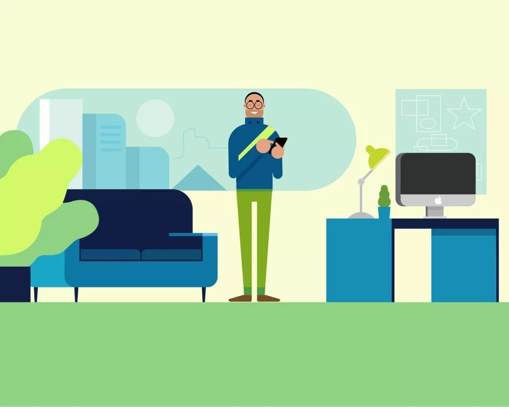

习惯就是人在几乎无意识的状态中做出的举动。据统计，人类将近一半的日常活动都受制于习惯。习惯是大脑借以掌握复杂举动的途径之一。神经系统科学家指出，人脑中存在一个负责无意识行为的基底神经节，那些无意中产生的条件反射会以习惯的形式存储在基底神经节中，从而使人们腾出精力来关注其他的事物。当大脑试图走捷径而不再主动思考接下来该做些什么时，习惯就养成了。为解决当下面临的问题，大脑会在极短的时间内从行为存储库里提取出相宜的对策。
企业如何从习惯中受益？
既然设定好的行为模式会对我们的一举一动产生如此巨大的影响，那企业也必然能借助习惯的力量发掘出有价值的商机。事实上，精于此道的企业一直将培养用户习惯作为其开发产品的一个基本原则。
习惯养成类产品能够改变用户的行为，使他们无须外部诱因就开始从事某种活动。其目的就是让用户一而再，再而三地自觉亲近这个产品，而不需要广告和促销这种外显的行动召唤。对产品的依赖性一旦形成，用户就会在诸如排队这一类惯常事务中使用这个产品打发时间。在对习惯的成因条分缕析之前，我们先得明确习惯的重要性，以及习惯能给企业带来哪些竞争优势。一般说来，用户对产品的依赖会给企业带来以下几个方面的好处：
1、提升“用户终身价值”
工商管理学中有这样一个概念：公司价值等于它日后获得的利益总额。其参照标准取决于投资人如何计算该公司股票的合理价格。在考核公司CEO和管理团队的业绩时，主要依据的是他们拉升公司股价的能力，因此CEO和管理者们最关心的莫过于自己公司产生的净现金流的大小。在股东们看来，管理层的任务就是实施战略计划，通过提高利润或降低成本来增加公司的未来收益。
让用户对产品形成依赖是提升公司价值的一个有效途径，因为这可以提升“用户终身价值”。所谓用户终身价值，是指一个用户在其有生之年忠实使用某个产品的过程中为其付出的投资总额。当用户对某个产品产生依赖时，使用时间会延长，使用频率也会增加，最终的用户终身价值因而也会更高。
有些产品的用户终身价值相当高。比如说信用卡持卡人一般会成为长期的忠实用户，为信用卡发放机构带来丰厚的回报。因此，这些机构会去花大价钱争取新的用户。这就是为什么你会收到名目繁多的促销优惠信息，包括免费赠品或者航空里程奖励，来诱使你再办新卡或是给旧卡升级。你身上所隐含的用户终身价值正是信用卡机构进行市场营销的原动力。
2、提高价格的灵活性
知名投资人、伯克希尔•哈撒韦公司CEO沃伦•巴菲特曾经说过，要衡量一个企业是否强大，就要看看它在提价问题上经历过多少痛苦。巴菲特和他的搭档查理•芒格发现，用户对某个产品形成使用习惯后，他们对该产品的依赖性就会增强，对价格的敏感度则会降低。他们二人坦言，正是由于掌握了这一消费者心理，他们才会投资后来闻名于世的可口可乐等公司。 巴菲特和芒格很清楚，习惯让企业在提价问题上掌握了更多的主动性。
比如说，免费视频游戏行业的行规是，游戏开发商延迟向玩家收取费用，直到玩家玩上瘾。一旦玩家开始对玩游戏迫不及待，并且渴望在游戏中达到更高的级别，那么掏腰包就会变得顺理成章。真正的收益其实来自虚拟道具、生命值、超能力等虚拟游戏用品的销售。自2013年12月以来，已有5亿多人下载了“糖果粉碎游戏”（Candy Crush Saga）。这款主要出现在移动设备上的“免费”游戏已经让部分用户变成了付费玩家，平均每天给游戏开发商带来的净利润高达100万美元。
3、加快增速
从产品中不断发现惊喜的那些用户往往乐于和朋友分享这份感受。他们越是频繁地使用产品，就越有可能邀请朋友们与之共享。产品的忠实粉丝最终会成为品牌的推广者，他们会为你的公司做免费的宣传，让你在不费一兵一卒的情况下就收拢新客户。能让用户积极参与的产品还具备另外一个优势，那就是在竞争中以更快的发展速度超越对手。例如Facebook，尽管没有在社交网络领域占领先机，但它还是后来居上，盖过了竞争对手MySpace和Friendster。在扎克伯格放弃学业，将刚出炉的Facebook推向市场时，MySpace和Friendster均发展态势良好，都拥有数千万用户，但尽管如此，社交网络领域的主导地位最终还是被Facebook所抢占。
Facebook的成功在一定程度上可以归因于我称为“良性循环”的法则：使用频率越高，病毒式增长速度就越快。正如从科技企业经营者转型为风险资本家的戴维•斯科克所指出的，“提高增长速度最关键的因素就是‘病毒循环周期’”。 这个周期指的是老用户邀请新用户花费的时长，其影响力不可小觑。举例来说，20天内，若以两天为一循环周期，用户量可能会达到20470，但是如果将这个周期减半，变成一天一循环，那用户数量将超过2000万！从逻辑上来讲，周期越短，结果就越理想，只是理想的程度还未受到足够关注。”
吸引大批用户每天到访，这将极大地缩短产品的“病毒循环周期”，原因有二：第一，老用户会越来越频繁地使用该产品（比如在Facebook上添加好友关注）；第二，老用户越多，吸引新用户做出反馈的可能性就越大。这个循环不仅能提高用户的参与量，使这个往复过程永不中断，还能加快产品的推广进程。
4、提高竞争力
用户对产品的依赖是一种竞争优势。一旦某个产品能够让用户改变自己的生活习惯，那其他产品就几乎不具任何威胁。很多企业经营者都错误地认为，新产品只要比原有产品略胜一筹，就足以让用户一见倾心。但是，一旦涉及撼动用户的老习惯这个问题，企业家们就会发现，好产品并不一定总能占据上风，尤其是当众多用户已经选择了其他具有竞争力的产品时。
约翰•古维尔是哈佛大学商学院市场营销学教授，他在一篇经典的论文中明确指出：“许多创新都以失败告终，因为用户总是过分地倚重原有产品，而商家却总是高估新产品。”古维尔认为，新产品要想在市场上站稳脚跟，略胜一筹是远远不够的，必须要有绝对优势。缘何如此？因为原有产品的影响已经深入骨髓，要想撼动用户的使用习惯，新的产品或服务就一定要有摧枯拉朽的能量。即便某个新产品优势显著，但如果与用户业已形成的习惯冲突太过激烈，那就注定无法成功。
就拿QWERTY键盘来说，它在很多方面都比不上其他新产品。这款键盘于19世纪70年代问世，最初被用在如今已成为古董的老式打字机上。常用字符在这款键盘上被分隔得很开，这样可以防止打字机上的连动杆在人们打字时卡住。 当然，这种操作上的阻碍在数码时代早已不存在，但是无论其他新型键盘的字符布局是多么精巧，QWERTY都依然是通用的标准键盘。QWERTY键盘之所以经久不衰，完全是因为改变用户习惯所需付出的代价实在是太大了。我们最初使用这款键盘时往往只用一根或两根手指。经过几个月的练习，我们学会了同时调动十根手指，文字会在不知不觉间由思绪流淌至屏幕。转而使用一款完全陌生的键盘，哪怕它能提高工作效率，也意味着我们将不得不重新学习打字。做出这种改变的可能性几乎为零。
用户也会因为“存储价值”而对产品产生更强的依赖性，从而进一步降低转向另外一款产品的可能性。比如说，使用Gmail发送和接收邮件，邮件可以永久保留，用户既往的所有邮件内容都能被长期存储。Twitter用户的影响力会随着粉丝数量的上升而增强，使他们在圈子里传播信息时发挥更大的能量。用户在Instagram上所记录下的生活片段还可以添加在他们的数字剪贴板上。人们的生活与这些产品和服务息息相关，更换邮件服务、社交网络或是图片分享应用软件会给他们造成太多麻烦。这些服务所蕴含的内在价值是不可转换的，所以用户不会轻易放弃它们。
总而言之，用户的忠实依赖会促使企业给产品做进一步投资。更高的用户终身价值，更大的价格灵活性，更快速的增长，以及更显著的竞争优势，凡此种种，将共同为企业创造更可观的经济收益。